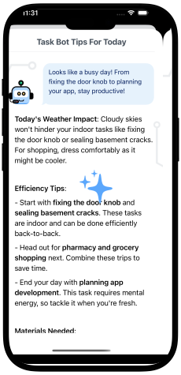

Snap a pic, make a task – Take a photo and poof — it’s on your list.
Talk, don’t type – Hit the mic, say what’s on your mind, and I’ll create the task.
Weather tips – I’ll warn you if rain might ruin your outdoor plans.
AI guidance – Stuck? I’ll give you steps, tips, or even a pep talk.
Daily planning – Ask me what to focus on, and I’ll help you plan your day.
Subtasks & priorities – Break things down and flag what matters most.
Drag & drop – Organize your tasks just the way you like.
Tasks don’t have to be boring. Tell me what you need to do — snap it, say it, or type it —
and I’ll handle the rest.
Notes That Do More
Features:
Turn notes into tasks – One tap and your idea becomes action.
Voice-to-note – Speak it, and I’ll write it down.
Quick summaries – I can shrink long notes into bite-sized highlights.
Grammar polish – I’ll clean up those typos for you.
Tone magic – Want it casual or formal? I’ve got you.
Notes don’t just sit there with me — I can tidy them up, summarize them, and even turn them
into tasks. Try me!

Little Things, Big Difference
Features:
Project labels – Group your stuff by theme or project.
Task lists & note folders – Stay organized without thinking about it.
Dark mode – Chill mode for your eyes (and your vibe).
I’ve got a few bonus tricks too — like labels, folders, and dark mode — because staying
organized should look good, too.
Your Friendly Little Helper
TaskBot keeps your tasks and notes in order, gives you smart guidance, and saves you time —
all while staying fun and easy to use. Less stress, more done, more time for you.
Less stress, more done, and more free time for you — that's my job. Ready to team up?